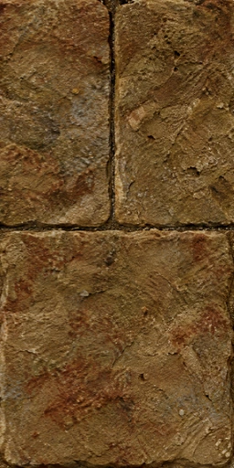

Source-bound art trials for Hexen II and Portal of Praevus. Exact 4× width and height, lossy WebP quality 92 for colour, height and normal XYZ. These are offline previews; Hexen engine integration is pending. Source and map manifest.
rtex337 · base · 256 × 512
Original, nearest enlarged for layout

Photographic diffuse, actual Q92 file
Repeated tile
Half- and quarter-native comparisons use the same box downsampling on both inputs. Numeric errors are diagnostics; visual similarity and joins require review.
Half- and quarter-native comparisons use the same box downsampling on both inputs. Numeric errors are diagnostics; visual similarity and joins require review.